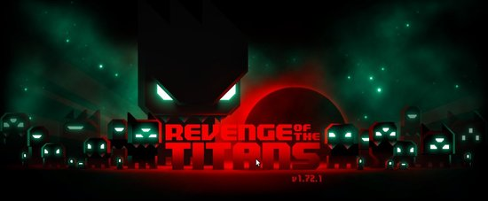
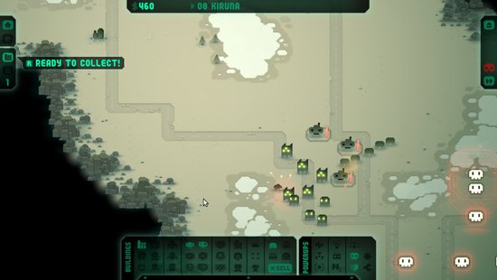
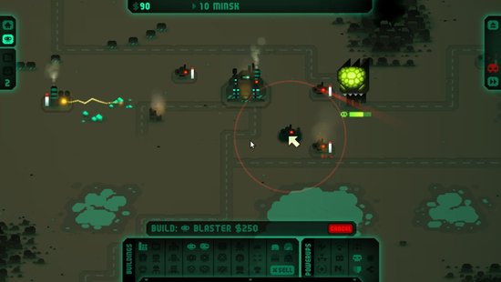
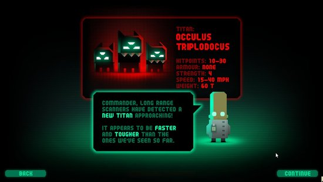
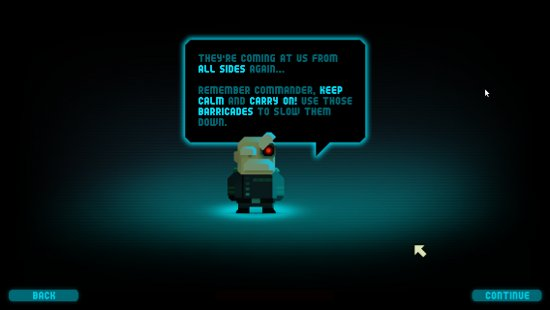

Revenge of the Titans
Jan 27, 2011 · 4 minute read · CommentsHobbies

Revenge of the Titans es un tower defense desarrollado por la compañía independiente Puppy Games. Me hice con él gracias al Humble Indie Bundle, ese magnífico pack de cinco pequeñas grandes obras al precio que el comprador estimase oportuno. No todos los días lanzan juegos multiplataforma sin DRM y durante las últimas semanas lo he estado disfrutando en mi querida Ubuntu. Sigan leyendo porque el “jueguecito” tiene una propuesta de lo más interesante.

¡Los titanes han vuelto!
Los titanes invadieron La Tierra tiempo atrás y en el matamarcianos Titans Attack (que no he probado) los humanos les hicimos frente. Finalmente han conseguido aterrizar, llegan clamando venganza y dispuestos a reducir nuestro planeta a cenizas. Este es el planteamiento de Revenge of the Titans, un tower defense que destila personalidad.
Revenge of the Titans ofrece tres modos de juego: Campaing, Endless y Survival. En el modo campaña comenzamos defendiendo nuestro planeta y después perseguimos a los titanes por el Sistema Solar. Cada planeta es una campaña compuesta de un puñado de misiones. En el modo interminable debemos atravesar una serie de encuentros con los titanes en creciente dificultad. Finalmente, el modo supervivencia consiste en un único escenario en el que no paran de aparecer titanes. Puede que la campaña no sea extremadamente larga pero la dificultad y los distintos modos de juego aportan longevidad extra. ¡Ah, además hay logros!

Tower defense for the win
En cada escenario debemos acabar con las oleadas de titanes que se ciernen sobre nuestra base central. Es imprescindible recolectar y administrar mineral e invertirlo en construir torretas entre otras estructuras para ponérselo complicado a los invasores. A primera vista puede parecer que desde la vista cenital controlamos el territorio pero, cuando tenemos varios frentes de combate abiertos, las misión se hace cuesta arriba. Conforme avanzamos no es extraño tener que repetir misiones, menos mal que su dinamismo hace que la frustración no aumente demasiado. Cada partida es diferente y no vale de nada memorizar que un enemigo especial entre por un punto determinado puesto que va cambiando. Revenge of the Titans es un reto divertido que nos obligará a buscar la mejor aproximación para cada situación.
Entre misiones podemos aprovechar para invertir recursos en mejoras tecnológicas. El árbol de investigación tiene unas dimensiones aceptables y le da más profundidad al juego. No solo nos encargaremos de gestionar el mineral durante la batalla sino que tomaremos la delicada decisión de investigar en mejoras de armamento o ahorrar para el futuro. Creedme, los recursos son extremadamente limitados.

El encanto de lo Indie
El estilo visual de Revenge of the Titans es harto simple pero nos encandilará al segundo. Todo tiene su encanto: desde los propios titanes pasando por la interfaz hasta nuestros dos consejeros particulares. Una mezcla entre lo tecnológico, el dibujo animado y lo retro. Como podéis ver en las capturas, no destaca en efectos ni innovación excesiva pero a mí me tiene ganado, ¿qué le voy a hacer? Es puro amor.
No obstante, el juego presenta ciertos problemas en su apartado técnico que no puedo dejarme en el tintero. En primer lugar hay que reconocer sus serios problemas de rendimiento. Cuando comienzan a ocurrir muchas cosas en el escenario el juego no responde todo lo bien que debería y la interacción con el usuario se vuelve un pelín tosca. Sería comprensible si manejase un gran número de elementos 3D pero para un juego relativamente sencillo en 2D es grave. El segundo problema es menos crítico y más subjetivo. Hubiese preferido que los indicadores de las unidades fuesen más claros.

En resumen
No quiero que se queden con una mala impresión de Revenge of the Titans por culpa del último párrafo. Es un juego excelente, muy apropiado para pequeños ratos libres. Divertido, gracioso y con un planteamiento que incita a seguir jugando lo cual es decir mucho. El problema es que duele sobremanera pagar cerca de 13€ por un producto sencillo estando disponibles verdaderos triples A en plataformas como Steam. El Humble Indie Bundle fue una maravillosa oportunidad para adquirirlo a mejor precio, quizás dentro de poco hagan rebajas. Bueno, les dejo que ahora le toca el turno a Braid.